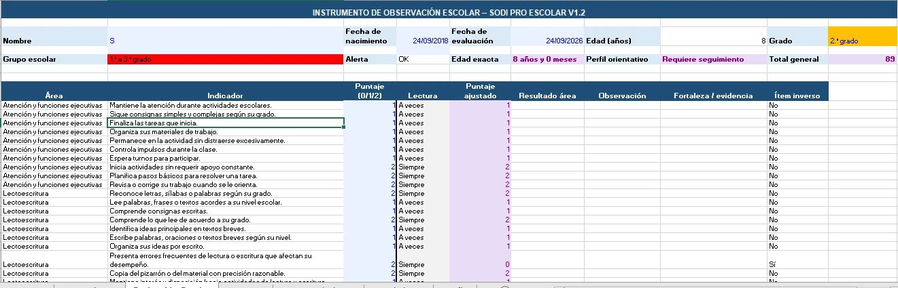

Evaluación automatizada
Planillas para Inicial y Escolar Básica. Indicadores, puntajes, resultados por área y alertas orientativas.
OBSERVÁ Y ORGANIZÁTu trabajo educativo, mejor organizado. Planillas automatizadas, instrumentos e IA para transformar tus observaciones en informes y orientaciones claras.
Gs. 149.000 Pago único · Paquete digital + acceso a IA

Una planilla es el punto de partida.
El acompañamiento es el propósito.
UN PAQUETE, TODO EL RECORRIDO
Materiales que se conectan entre sí para observar, comunicar y dar seguimiento con mayor orden.
Planillas para Inicial y Escolar Básica. Indicadores, puntajes, resultados por área y alertas orientativas.
OBSERVÁ Y ORGANIZÁModelos editables para comunicar a familias y docentes, y documentar una derivación cuando corresponda.
COMUNICÁ CON CLARIDADMateriales y estrategias de acompañamiento para seleccionar y adaptar al nivel y a las necesidades observadas.
PASÁ A LA ACCIÓNInstrumentos de entrevista, observación y registro para reunir evidencias y organizar el trabajo con las familias.
SOSTENÉ EL PROCESOGuías de uso y orientación para recorrer los materiales, interpretar con contexto y registrar avances.
TRABAJÁ CON UNA GUÍAApoyo para preparar borradores de informes, derivaciones y planes a partir de los datos que registrás.
Conocé la IAMENOS IMAGINAR. MÁS VER.
Explorá las capturas del producto. Podés ampliar cada imagen para ver los detalles.
Registrá indicadores y puntajes en la planilla de tu nivel. Los resultados por área ayudan a organizar la lectura y decidir qué requiere seguimiento.
Captura real · Planilla de observación escolar
La observación, la entrevista y el registro anecdótico aportan contexto a los puntajes.
ENCONTRÁ TU PUNTO DE PARTIDA
Elegí tu perfil, tu nivel y lo que necesitás resolver. Te mostramos por dónde empezar dentro del mismo paquete.
Organizá la observación con la planilla escolar y complementala con registros e información del contexto.
Los resultados son orientativos y se interpretan con tu criterio profesional.
El selector orienta el uso de los componentes. Todos pertenecen al paquete SODI PRO; el plan profesional se reserva al psicólogo o psicopedagogo responsable.
✦ SODI PRO IA
La IA complementa el paquete: organiza los resultados, las fortalezas y las observaciones para ayudarte a redactar y planificar.
Vos aportás el contexto y decidís.
Las salidas de IA son borradores orientativos que requieren revisión. No constituyen un diagnóstico clínico.
Acceso habilitado al correo que facilitás al comprar. El enlace por sí solo no habilita el ingreso.
EL PRODUCTO EN ACCIÓN
Dos formas de conocerlo: una presentación breve y una demostración práctica con la planilla y la IA.
Planilla → información registrada → documento → revisión profesional. El video incluye subtítulos visibles.
Se presenta el paquete SODI PRO para Inicial y 1.º a 6.º grado. Luego se muestra la planilla, se incorpora la información a la IA, se elige el documento y se revisan los resultados. Finalmente, se muestra el plan profesional y se destaca que el profesional selecciona y adapta lo pertinente a cada caso.
Planillas, informes y acompañamiento con apoyo de IA.
SODI PRO integra evaluación, seguimiento e intervención educativa. El recorrido comienza con la planilla de observación, continúa con los documentos y orientaciones, y se complementa con la IA como apoyo al trabajo del profesional.
EMPEZÁ CON SODI PRO
Para organizar tu trabajo desde Educación Inicial hasta 6.º grado.
Gs.149.000
Pago único por el paquete digital
ANTES DE EMPEZAR
SODI PRO acompaña la observación y el trabajo educativo con herramientas orientativas.
Para psicólogos educacionales, psicopedagogos y docentes que trabajan en Educación Inicial y Escolar Básica hasta 6.º grado. Cada perfil utiliza los materiales de acuerdo con sus funciones. El plan de acompañamiento profesional está destinado al psicólogo o psicopedagogo responsable.
Sí. El alcance del paquete comprende Prejardín, Jardín, Preescolar y 1.º a 6.º grado. Elegí la planilla correspondiente al nivel y adaptá las orientaciones al contexto del estudiante.
El paquete combina planillas automatizadas, instrumentos de entrevista y observación, modelos de informes, materiales, estrategias y guías. La IA complementa ese recorrido con apoyo para preparar borradores de documentos.
Después del pago, enviás el comprobante y tu correo por WhatsApp. Se habilita la carpeta de materiales y el acceso a la IA para ese correo. Ingresá con la cuenta autorizada: disponer del enlace no habilita el acceso por sí solo.
La IA organiza y redacta borradores a partir de los datos que aportás. La observación, la interpretación, las decisiones de acompañamiento y la revisión final corresponden al profesional. Antes de cargar un caso, usá un código o nombre ficticio y retirá los datos identificatorios.
Son indicadores y alertas orientativas para organizar el acompañamiento y el seguimiento educativo. No confirman diagnósticos clínicos ni sustituyen evaluaciones especializadas. Una derivación se decide con criterio profesional y con la información del contexto.
El precio corresponde a la compra del paquete y a la habilitación indicada. La disponibilidad de la IA y sus funciones depende del servicio; no se promete una cantidad ilimitada de generaciones ni acceso permanente. Consultá las condiciones vigentes por WhatsApp.
PARA COMPRADORES
Ingresá a la IA con el correo habilitado para tu acceso. Si todavía no fue autorizado, contactá a Pedro por WhatsApp.